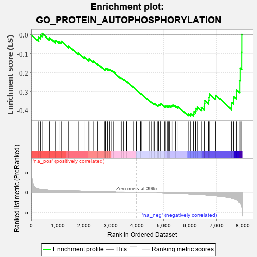
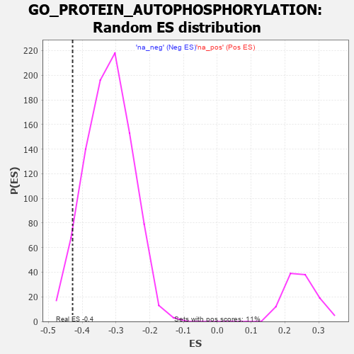

| | | Dataset | 7d |
| Phenotype | NoPhenotypeAvailable |
| Upregulated in class | na_neg |
| GeneSet | GO_PROTEIN_AUTOPHOSPHORYLATION |
| Enrichment Score (ES) | -0.4285419 |
| Normalized Enrichment Score (NES) | -1.3319576 |
| Nominal p-value | 0.051860202 |
| FDR q-value | 0.4305147 |
| FWER p-Value | 1.0 |
Table: GSEA Results Summary

Fig 1: Enrichment plot: GO_PROTEIN_AUTOPHOSPHORYLATION
Profile of the Running ES Score & Positions of GeneSet Members on the Rank Ordered List
| PROBE | GENE SYMBOL | GENE_TITLE | RANK IN GENE LIST | RANK METRIC SCORE | RUNNING ES | CORE ENRICHMENT | | 1 | ULK1 | | | 272 | 0.875 | -0.0124 | No |
| 2 | DAPK2 | | | 343 | 0.754 | -0.0023 | No |
| 3 | NBN | | | 405 | 0.696 | 0.0075 | No |
| 4 | MRE11 | | | 693 | 0.560 | -0.0147 | No |
| 5 | NLK | | | 911 | 0.504 | -0.0295 | No |
| 6 | AKT1 | | | 1040 | 0.476 | -0.0337 | No |
| 7 | SRC | | | 1128 | 0.459 | -0.0332 | No |
| 8 | MEX3B | | | 1415 | 0.407 | -0.0592 | No |
| 9 | VRK1 | | | 1766 | 0.343 | -0.0949 | No |
| 10 | MOB1B | | | 1991 | 0.306 | -0.1156 | No |
| 11 | DDR1 | | | 2176 | 0.280 | -0.1318 | No |
| 12 | SYK | | | 2186 | 0.278 | -0.1260 | No |
| 13 | CLK4 | | | 2329 | 0.256 | -0.1375 | No |
| 14 | MELK | | | 2499 | 0.227 | -0.1532 | No |
| 15 | RIOK2 | | | 2775 | 0.187 | -0.1833 | No |
| 16 | ATR | | | 2800 | 0.183 | -0.1817 | No |
| 17 | FER | | | 2803 | 0.183 | -0.1774 | No |
| 18 | DAPK3 | | | 2880 | 0.169 | -0.1828 | No |
| 19 | FGFR2 | | | 2895 | 0.167 | -0.1803 | No |
| 20 | BTK | | | 2958 | 0.156 | -0.1842 | No |
| 21 | MARK3 | | | 3031 | 0.145 | -0.1897 | No |
| 22 | CHP1 | | | 3089 | 0.138 | -0.1934 | No |
| 23 | DDX3X | | | 3388 | 0.091 | -0.2289 | No |
| 24 | AAK1 | | | 3400 | 0.089 | -0.2280 | No |
| 25 | CDK5 | | | 3480 | 0.080 | -0.2360 | No |
| 26 | FES | | | 3501 | 0.077 | -0.2366 | No |
| 27 | MAPK3 | | | 3589 | 0.062 | -0.2461 | No |
| 28 | STK25 | | | 3602 | 0.059 | -0.2461 | No |
| 29 | SMG1 | | | 3843 | 0.021 | -0.2760 | No |
| 30 | NEK2 | | | 3871 | 0.016 | -0.2790 | No |
| 31 | IGF1R | | | 3970 | -0.002 | -0.2914 | No |
| 32 | MTOR | | | 4114 | -0.025 | -0.3089 | No |
| 33 | ABL1 | | | 4125 | -0.027 | -0.3095 | No |
| 34 | CDK12 | | | 4148 | -0.033 | -0.3114 | No |
| 35 | WNK3 | | | 4153 | -0.034 | -0.3111 | No |
| 36 | LRRK2 | | | 4467 | -0.087 | -0.3485 | No |
| 37 | NTRK2 | | | 4543 | -0.104 | -0.3554 | No |
| 38 | CLK2 | | | 4628 | -0.124 | -0.3629 | No |
| 39 | FGFR3 | | | 4656 | -0.129 | -0.3631 | No |
| 40 | PIM1 | | | 4776 | -0.152 | -0.3743 | No |
| 41 | PIM2 | | | 4789 | -0.155 | -0.3719 | No |
| 42 | TNIK | | | 4804 | -0.158 | -0.3697 | No |
| 43 | TAOK3 | | | 4823 | -0.162 | -0.3679 | No |
| 44 | ULK3 | | | 4873 | -0.171 | -0.3698 | No |
| 45 | SIK2 | | | 4875 | -0.172 | -0.3656 | No |
| 46 | MARK2 | | | 4899 | -0.177 | -0.3641 | No |
| 47 | PDPK1 | | | 5043 | -0.207 | -0.3770 | No |
| 48 | RAP2C | | | 5073 | -0.218 | -0.3751 | No |
| 49 | STK10 | | | 5130 | -0.233 | -0.3764 | No |
| 50 | NEK10 | | | 5180 | -0.244 | -0.3765 | No |
| 51 | ATM | | | 5210 | -0.249 | -0.3738 | No |
| 52 | EPHA4 | | | 5273 | -0.265 | -0.3750 | No |
| 53 | RAD50 | | | 5314 | -0.276 | -0.3731 | No |
| 54 | EPHA1 | | | 5349 | -0.285 | -0.3703 | No |
| 55 | FRK | | | 5451 | -0.307 | -0.3753 | No |
| 56 | FGFR1 | | | 5543 | -0.332 | -0.3785 | No |
| 57 | STK11 | | | 5922 | -0.443 | -0.4152 | No |
| 58 | PRKX | | | 6016 | -0.477 | -0.4150 | No |
| 59 | STK33 | | | 6124 | -0.512 | -0.4156 | Yes |
| 60 | STK4 | | | 6145 | -0.518 | -0.4051 | Yes |
| 61 | INSR | | | 6204 | -0.538 | -0.3989 | Yes |
| 62 | MVP | | | 6223 | -0.543 | -0.3875 | Yes |
| 63 | STK39 | | | 6274 | -0.563 | -0.3797 | Yes |
| 64 | CSK | | | 6428 | -0.630 | -0.3832 | Yes |
| 65 | ACE | | | 6526 | -0.674 | -0.3785 | Yes |
| 66 | DDR2 | | | 6542 | -0.681 | -0.3632 | Yes |
| 67 | STK24 | | | 6550 | -0.684 | -0.3469 | Yes |
| 68 | PAK1 | | | 6691 | -0.757 | -0.3456 | Yes |
| 69 | EGFR | | | 6708 | -0.765 | -0.3283 | Yes |
| 70 | GSK3B | | | 6719 | -0.768 | -0.3102 | Yes |
| 71 | PIM3 | | | 6964 | -0.914 | -0.3181 | Yes |
| 72 | CALM1 | | | 7567 | -1.499 | -0.3566 | Yes |
| 73 | TAF1 | | | 7643 | -1.633 | -0.3250 | Yes |
| 74 | TRPM7 | | | 7761 | -1.936 | -0.2910 | Yes |
| 75 | CALM3 | | | 7869 | -2.525 | -0.2409 | Yes |
| 76 | FYN | | | 7881 | -2.622 | -0.1763 | Yes |
| 77 | PASK | | | 7946 | -3.674 | -0.0918 | Yes |
| 78 | DAPK1 | | | 7950 | -3.767 | 0.0027 | Yes |
Table: GSEA details [plain text format]

Fig 2: GO_PROTEIN_AUTOPHOSPHORYLATION: Random ES distribution
Gene set null distribution of ES for GO_PROTEIN_AUTOPHOSPHORYLATION